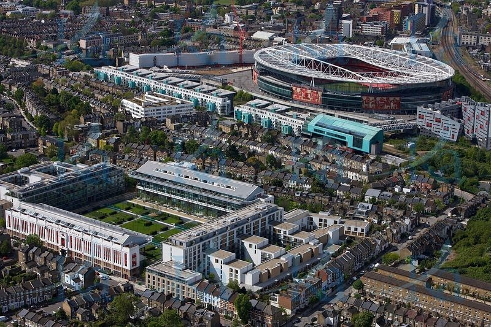
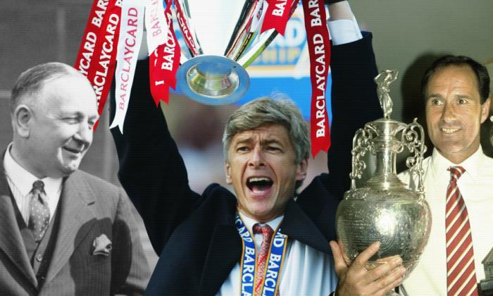

The cannons on the original crest were obviously a reference to the military influence in Woolwich and despite the Club’s ties with the area being cut 89 years ago, the cannon theme has developed throughout the years and has remained prominent on the Gunners different crests down the years, including the new design. The Club’s identity has thus evolved over the years and the decision to formulate a new crest in 2002 was two-fold. Firstly, as the VCC crest incorporated many separate elements introduced over a number of years, there was uncertainty surrounding its exact origination. Consequently, the Club was unable to copyright the crest. Secondly, it had always been one of the Club’s primary objectives to embrace the future and move forward. With Emirates Stadium on the horizon and the Gunners consistently challenging for domestic and European honours, the Club believed it was the ideal time to introduce a new crest.

Highbury (bottom left) and the Emirates Stadium (top right)
Arsenal Stadium, known almost universally by its original name of Highbury, was the Club’s home from 1913 until 2006. Highbury was designed by Archibald Leitch, who also designed stands for Manchester United, Chelsea, Everton, Liverpool, Tottenham and Glasgow Rangers. In the year 2006 Arsenal moved to the Emirates after they confirmed it was being built in the year 2004. This happened during the management of Arsene Wenger.
49 Undefeated
Arsenal went a record 49 consecutive top-flight league games unbeaten from May 2003 to October 2004, breaking Nottingham Forest's previous record of 42 set between November 1977 and November 1978. The run ended in controversy at Old Trafford as a harshly-awarded penalty spurred Manchester United to a 2-0 win in October 2004. In completing this remarkable run Arsenal also recorded an unbeaten top-flight league season, only equalled by Preston North End who went the season unbeaten in 1888-89. Although Preston North End played 22 league games that season against Arsenal's 38.

Arsenal's Greatest Managers
Herbert Chapman (left), who had won the FA Cup and two Division One titles with Huddersfield Town in the early Twenties, agreed to join the Gunners in the summer of 1925. Chapman set about reinventing the Club with almost immediate effect. In his first season at Highbury, the new manager steered the Gunners to an FA Cup Quarter Final and a second-place finish in the First Division; the highest league placing in their history. Arsenal’s prolonged dominance of English football started when Chapman won his first title in 1930 and, with the likes of Alex James and Cliff Bastin in the ranks, Arsenal became the envy of the football world. Chapman went on to win many trophies with Arsenal but all this felt insignificant next to a tragedy that would stun the Club. In January 1934, after watching an Arsenal Third Team match against Guildford City nursing a cold, Chapman’s condition quickly worsened. Soon afterwards, pneumonia set in. During the early hours of January 6, 1934, Herbert Chapman died at his home in Hendon aged 55.
Arsenal directors appointed George Graham (right) as their new manager on 14 May 1986. Graham’s reign was notable for the strict discipline put in place both on and off the pitch. Defensively, Arsenal were second to none and Graham set about building a back four that would serve the Gunners for over a decade, with young captain Tony Adams its centrepiece. Further up the field, the likes of David Rocastle, Paul Merson and Alan Smith provided the Gunners’ attacking threat. In his third season in charge, Graham would oversee perhaps the most dramatic title triumph in League history on the final day of the 1988/89 season. It was on 21 February 1995 that Graham, who had led Arsenal to six trophies in eight seasons, lost his job after a Premier League inquiry found he had received bungs totalling more than £400,000 from the transfers that took John Jensen and Pal Lydersen to Highbury.
Arsène Wenger (middle) arrived at Highbury in October 1996 after notable success at Monaco and a stint in charge of Japanese side Grampus Eight. He was the Club’s first boss from outside the UK. The arrival of the Frenchman would then change Arsenal Forever As well as transforming Arsenal on the pitch, the new manager set about revolutionising his players’ lives away from the pitch, implementing cutting-edge training regimes and dietary systems. The Frenchman was meticulous in his squad construction, adding the likes of Patrick Vieira, Emmanuel Petit and Marc Overmars to a team already boasting Arsenal institutions like David Seaman, Tony Adams and Dennis Bergkamp. Henry signed in August 1999, after Arsène Wenger’s side had been denied back-to-back titles by one point by Manchester United in the previous May. In 2001/02, Arsène Wenger’s side would surge to a spectacular Double, finishing seven points clear of Liverpool in the Premier League. They sealed the title with a win over Manchester United at Old Trafford, just days after dispatching Chelsea 2-0 in the FA Cup Final. Despite lifting the FA Cup once more in 2002/03, back-to-back titles would again elude the Gunners. But they made up for that disappointment in the season that followed, completing an unbeaten title campaign and going on to eclipse Nottingham Forest's long-standing run of League games without defeat. Played 49, Won 36, Drawn 13, Lost None - that Arsenal side was truly 'Invincible'.On April 20 2018 Arsene Wenger stepped down as Arsenal Manager ending his managerial legacy as arsenal manager.